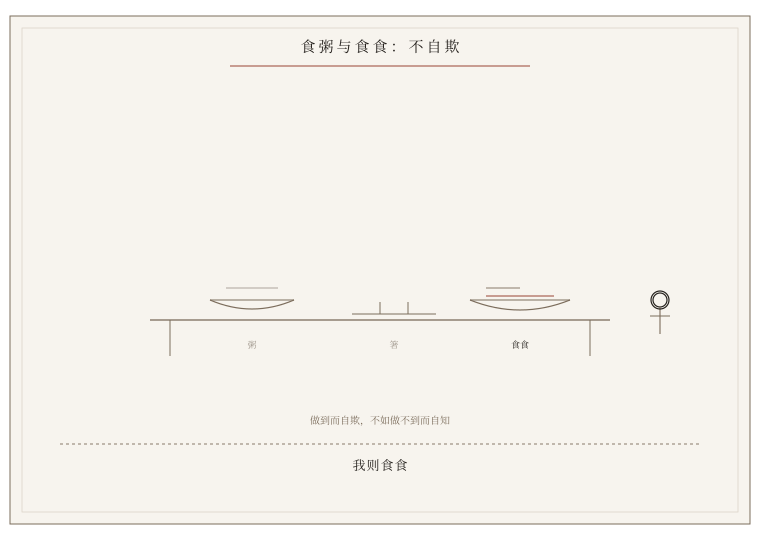

檀弓下 · 四·三十八 · 第 363 课
悼公之丧，季昭子问于孟敬子曰：「为君何食？」敬子曰：「食粥，天下之达礼也。吾三臣者之不能居公室也，四方莫不闻矣。勉而为瘠，则吾能，毋乃使人疑夫不以情居瘠者乎哉？我则食食。」
说什么事：鲁悼公之丧，季昭子问孟敬子：为国君服丧，该吃什么？孟敬子答：吃粥，这是天下通行的礼。可我们三家不能以臣礼事君，四方没有不知道的。勉强饿出瘦瘠的样子，我做得来；但这样一来，人家反而要疑心我们不是出于真情才瘦的。我还是照常吃饭吧。
落在哪一层：以「情」量礼。论「做给人看的哀」与「真做不来的哀」之间，还有一种诚实。
为何编在此位：上节论礼之不成立，此节论礼之做不成。前者的失败关乎对方，后者的失败关乎自己。
【经】悼公之喪，季昭子問於孟敬子曰：「為君何食？」敬子曰：「食粥，天下之達禮也。吾三臣者之不能居公室也，四方莫不聞矣。勉而為瘠，則吾能，毋乃使人疑夫不以情居瘠者乎哉？我則食食。」
【注】悼公，魯哀公之子。昭子，康子之曾孫，名強。敬子，武伯之子，名捷。／言鄰國皆知吾等不能居公室，以臣禮事君也。三臣，仲孫、叔孫、季孫也。／存時不盡忠，喪又不盡禮，非也。孔子曰：「喪事不敢不勉。」
【疏】底本此节无疏文。
悼公 鲁悼公，哀公之子。
季昭子 季康子之曾孙，名强。
孟敬子 孟武伯之子，名捷。
为君何食 为国君服丧期间当吃什么。
食粥 服君丧之食。粥者，米与水煮而不稠。
达礼 天下通行的礼。
三臣 注「仲孙、叔孙、季孙」，即鲁国三家。
不能居公室 不能以臣礼居君之朝。谓早已不臣。
勉而为瘠 勉强做出瘦瘠之状。瘠，瘦。
不以情居瘠 不是因情而瘦，是做出来的瘦。
食食 上「食」为动，下「食」为饭。谓照常吃饭。
鲁悼公之丧，季昭子问孟敬子：「为国君服丧吃什么？」孟敬子说：「吃粥，这是天下通行之礼。可我们三家不能以臣礼事君，四方没有不知道的。勉强饿出个瘦样子，我做得到；但人家岂不要疑心我们不是因情而瘦？我还是照常吃饭。」
此章是一段极坦白的对话。
一个人懂得礼，也知道自己不合礼；他不装，也不改，只把实话说完，然后照旧吃饭。
注家给的评语只有一句：「存时不尽忠，丧又不尽礼，非也。」
第一层 「为君何食」：问得极具体 不问「如何尽哀」，只问「吃什么」。
因为哀无从检验，食可以检验。礼制把最难验的心，落在最易验的事上：你吃粥，人便知你在丧。
此一设计，是礼的通例：心不可见，则以事见之。
第二层 「食粥，天下之达礼也」：他懂 孟敬子第一句就承认标准。
此句要紧：他不是不知礼的人。若不知，此章只是无礼；知而不行，此章才有分量。
故本章所记，不是一个人的失礼，是一个知礼者的自判。
第三层 「四方莫不闻矣」：先认账 他先认了最重的一条：我们三家早就不以臣礼事君，天下皆知。
此语一出，则后面所有的话都不必再辩。他不再争名分，只争「诚」。
第四层 「勉而为瘠，则吾能」：肯做，但不愿做假 这一句最见其人。「则吾能」三字，是承认能力：装得出。
而「毋乃使人疑夫不以情居瘠者乎哉」，是承认后果：装出来，反招疑。
他宁可被人说「不哀」，也不愿被人说「假哀」。此一取舍，虽不合礼，却自有一种分寸。
第五层 「我则食食」与注的评断 注断之曰「非也」，并不因他坦白而宽假。
此见礼学的立场：诚实可以解释失礼，不能替代礼。 一个人可以承认自己做不到，但礼的标准并不因此降低。
今日论事，常把「我很坦诚」当作免责。此章的注，正好相反。
与今日何干 凡自知不合某种标准者，可取两条路：一为勉强做出样子，二为照实承认而后不做。孟敬子选了后者，且被记为「非」——但他那一段话，反倒成了千古的名言。
可见礼之所许，不在「做到」，在「不自欺」。做到而自欺，不如做不到而自知。
| 左 | 右 |
|---|---|
| 为君何食 | 问最易验之事 |
| 食粥 | 天下之达礼 |
| 三臣 | 仲孙、叔孙、季孙 |
| 不能居公室 | 早不以臣礼事君 |
| 四方莫不闻 | 先自认账 |
| 勉而为瘠 | 装得出 |
| 不以情居瘠 | 做出来的瘦 |
| 我则食食 | 照常吃饭 |
| 非也 | 注之断 |
画一张低矮的食案，案上置一盂粥、一箸、一豆。案前一人跪坐（只以简笔轮廓示之，不画五官），双手放在膝上，面前之粥未动。案的右侧另置一具略高的食器，其中有饭，器已空了一半。两处食器之间不画连线。背景只画一道横墙的下缘。赭色只用在盂粥的沿口。
